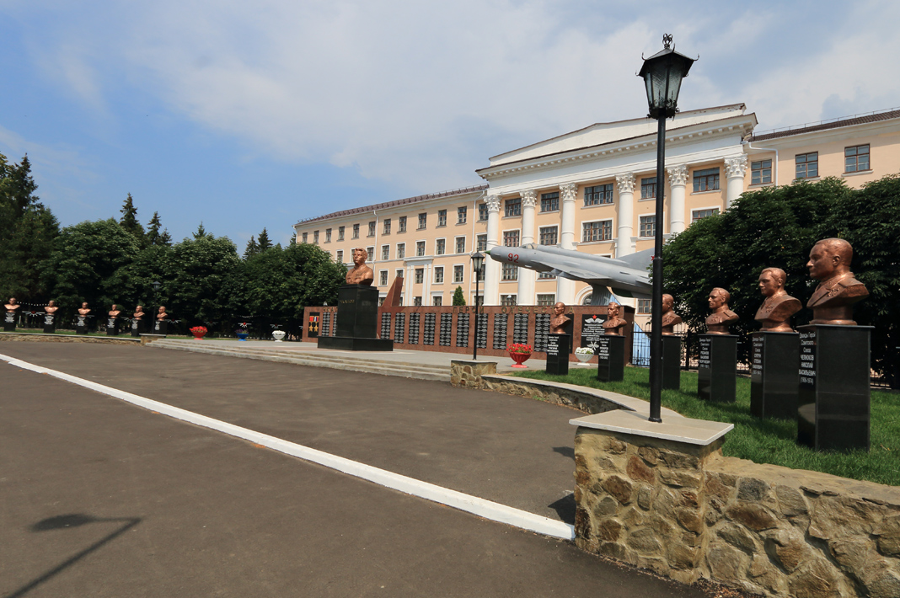
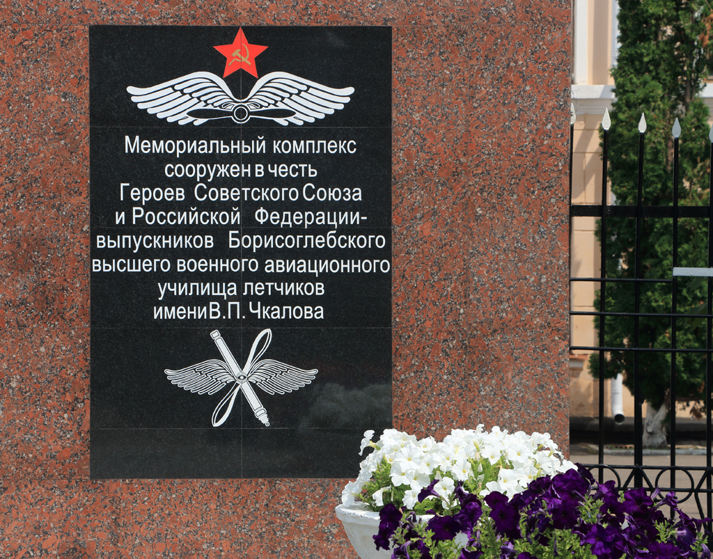
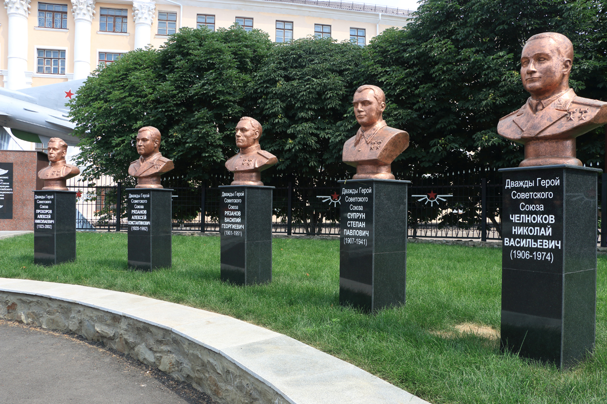
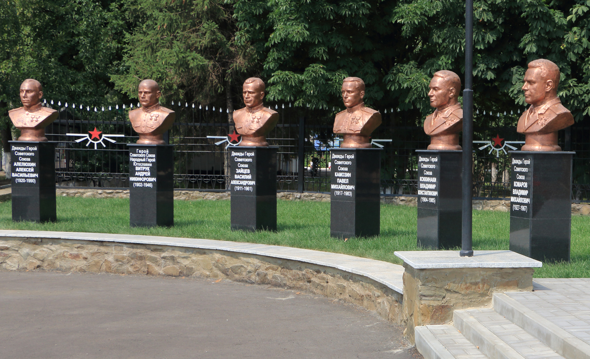
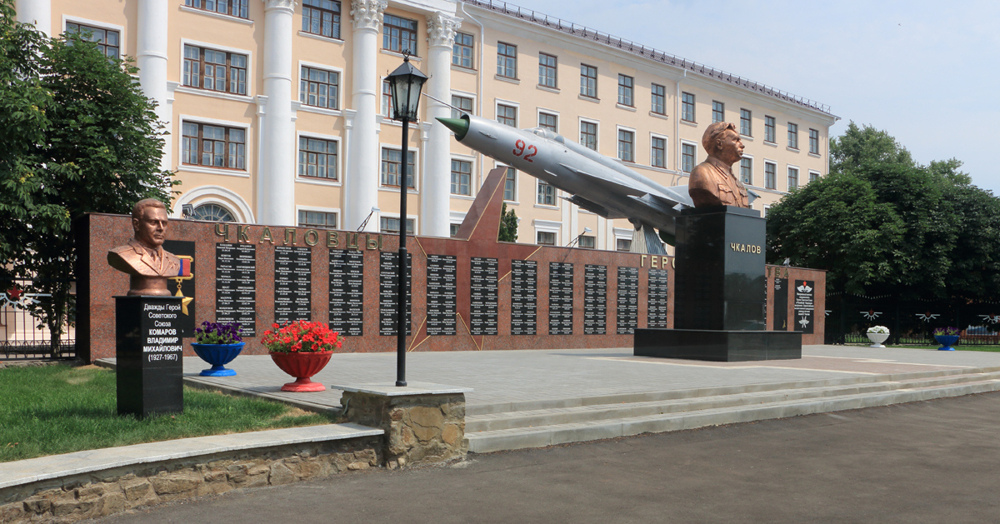
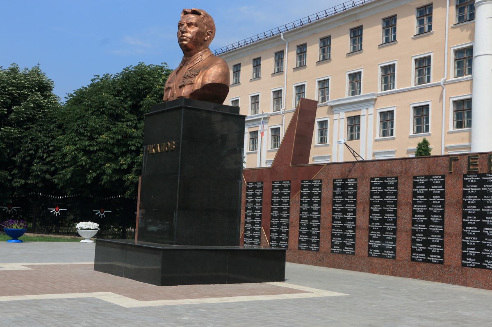
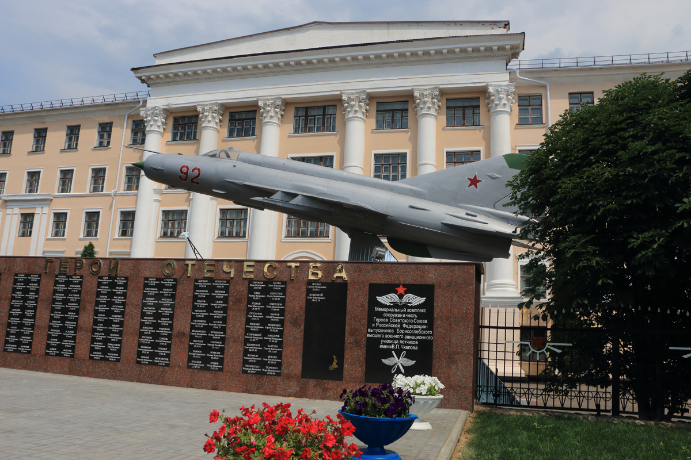
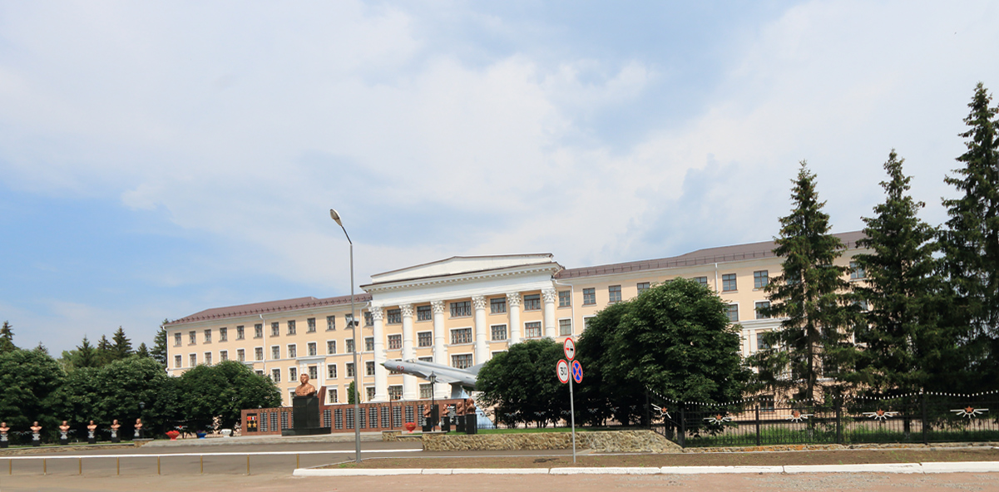
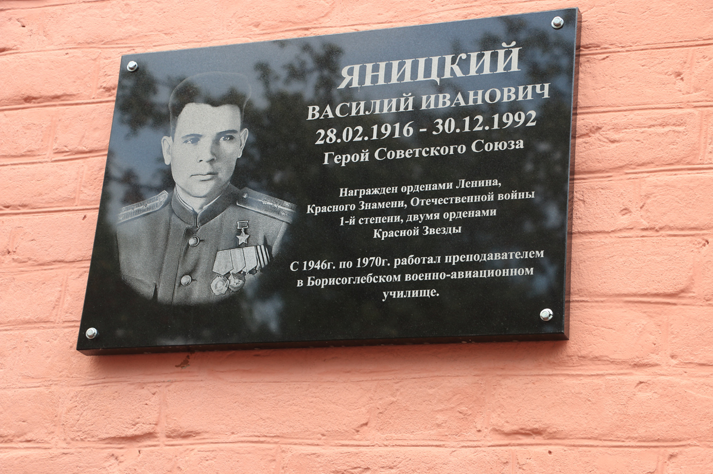
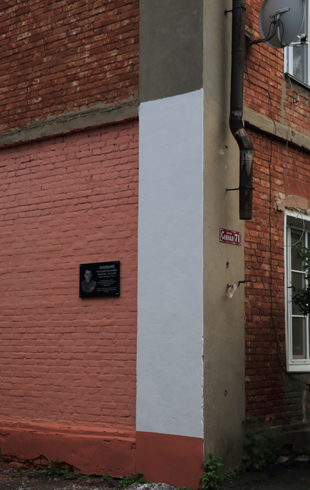

 <div style="text-align:left"><span style="font-size: medium;">Пару лет назад, <a href="http://galea-galley.livejournal.com/131869.html" target="_blank"><b>рассказывая</b></a> о старой фотографии отца, я поместил несколько снимков бывшего авиационного училища  в Борисоглебске, посетовав, что славное училище, давшее России много героев-летчиков, сейчас именуется &#34;второразрядной&#34; учебной базой. Побывав вновь в этом году в Борисоглебске, я был приятно удивлен, увидев перед зданием училища новый мемориальный комплекс, созданный к 70-летию Победы. Для маленького, в общем-то, городка, население которого в лучшие годы не превышало 65 тысяч человек (не считая начала девяностых годов прошлого века, когда в Борисоглебск хлынул поток беженцев из бывших советских республик), число Героев Советского Союза превышает 270 человек, плюс двенадцать дважды Героев - не каждый крупный город нашей страны может похвастаться таким созвездием.<br/><br/><a href="https://fotki.yandex.ru/next/users/galley42/album/225987/view/1163284" target="_blank" target="_blank" rel="nofollow"></a><br/><br/>Ниже приведено несколько более детальных снимков комплекса, а также фотография мемориальной доски, появившейся на нашем доме в Борисоглебске.<br/><br/><a name="cutid1"></a> <br/><a href="https://fotki.yandex.ru/next/users/galley42/album/225987/view/1163285" target="_blank" target="_blank" rel="nofollow"></a><br/><br/><a href="https://fotki.yandex.ru/next/users/galley42/album/225987/view/1163286" target="_blank" target="_blank" rel="nofollow"></a><br/><br/><a href="https://fotki.yandex.ru/next/users/galley42/album/225987/view/1163291" target="_blank" target="_blank" rel="nofollow"></a><br/><br/><a href="https://fotki.yandex.ru/next/users/galley42/album/225987/view/1163292" target="_blank" target="_blank" rel="nofollow"></a><br/><br/><a href="https://fotki.yandex.ru/next/users/galley42/album/225987/view/1163290" target="_blank" target="_blank" rel="nofollow"></a><br/><br/><a href="https://fotki.yandex.ru/next/users/galley42/album/225987/view/1163289" target="_blank" target="_blank" rel="nofollow"></a><br/><br/><a href="https://fotki.yandex.ru/next/users/galley42/album/225987/view/1163293" target="_blank" target="_blank" rel="nofollow"></a><br/><br/>Появилась мемориальная доска в честь Героя Советского Союза Яницкого и на нашем доме. Яницкий в бою потерял руку, но продолжал летать с протезом.<br/><br/><a href="https://fotki.yandex.ru/next/users/galley42/album/225987/view/1163287" target="_blank" target="_blank" rel="nofollow"></a><br/><br/>Строгий был дядька, но, мы, пацаны, его не боялись, уважали, звали не по имени-отчеству, а по фамилии: Яницкий. Когда он садился за руль своей &#34;Победы&#34;, мы заглядывали внутрь, пытаясь определить, как он поведет машину одной рукой.<br/><br/>Дом наш еще довоенной постройки, поэтому состояние его неприглядное, ремонта не было пожалуй что с момента его появления. Когда устанавливали доску, подкрасили только одну секцию стены, а все остальное осталось как и было.<br/><br/><a href="https://fotki.yandex.ru/next/users/galley42/album/225987/view/1163288" target="_blank" target="_blank" rel="nofollow"></a></span></div> 